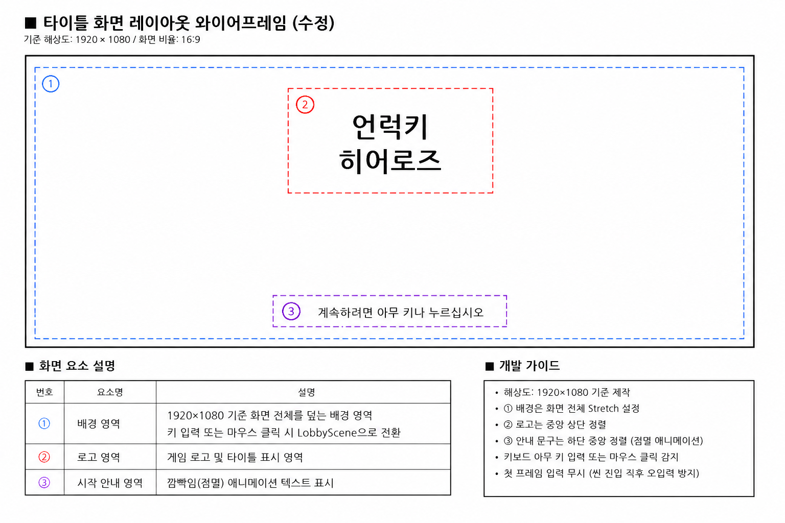
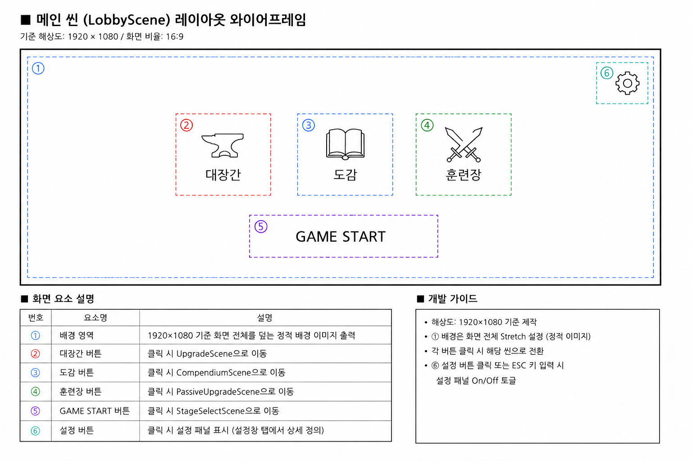
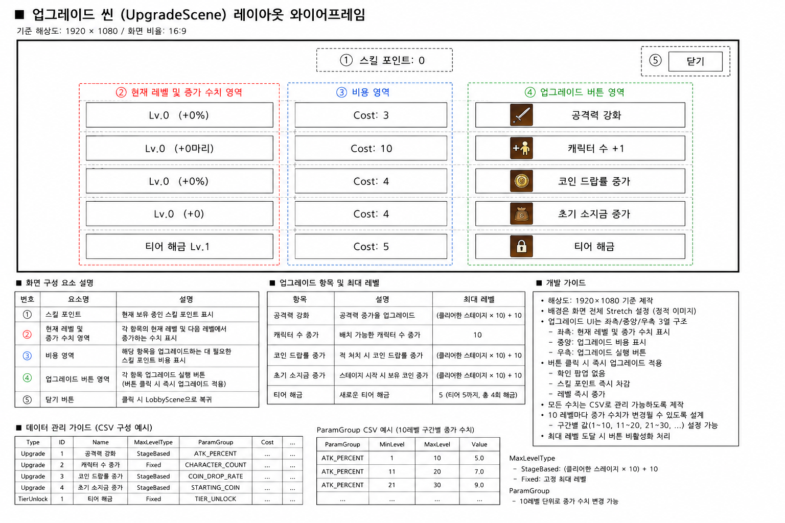
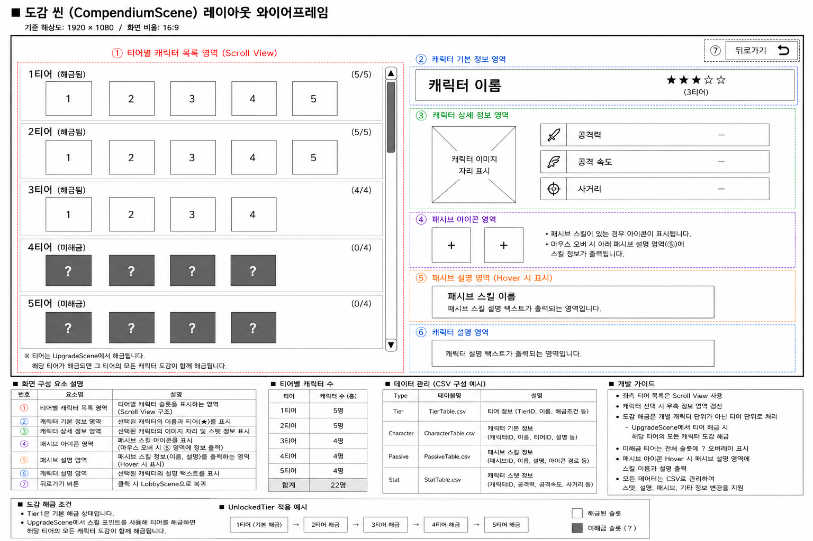
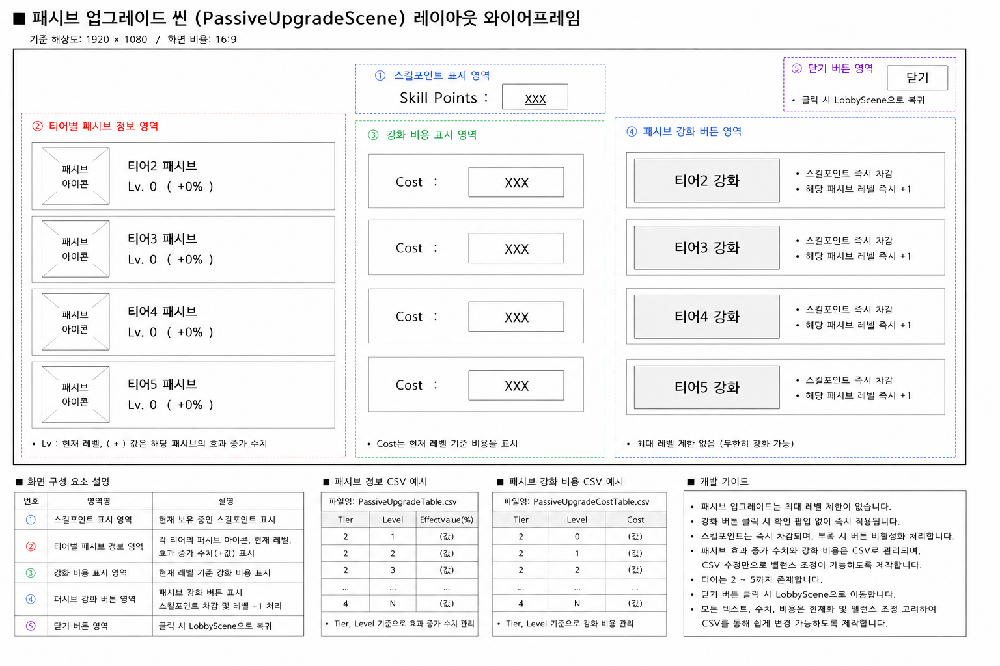
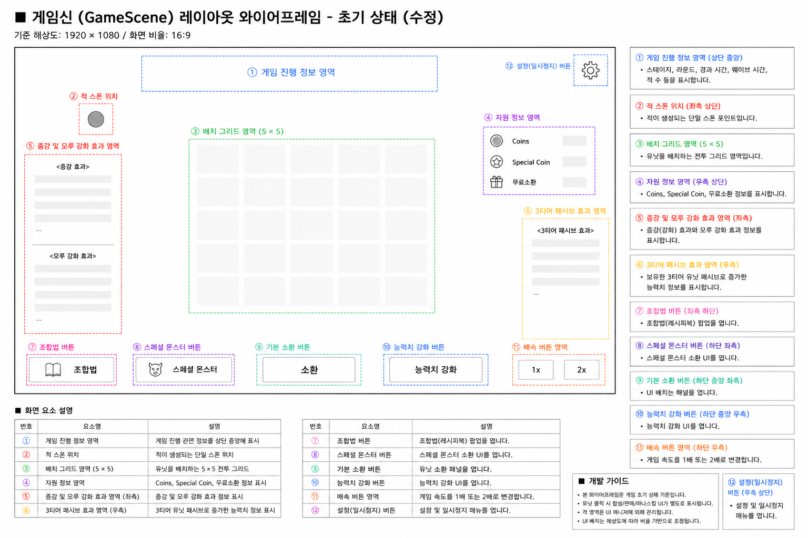
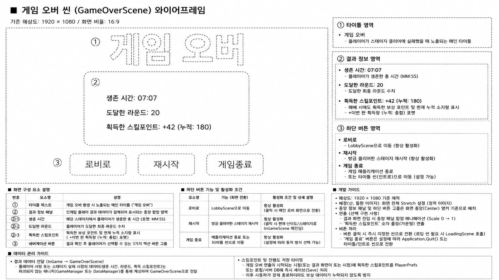

2D 타워 디펜스 게임 기획서
01. 프로젝트 개요 및 목적
※ 프로젝트의 개발 배경, 타겟 독자 및 핵심 재미 요소에 대한 기획 내용입니다.

02. 게임 코어 루프 및 시스템 흐름도
※ 배치, 전투, 웨이브 진행, 보상 획득으로 이어지는 핵심 게임 사이클 구조입니다.

03. 씬(Scene) 구조 및 네비게이션 설계
※ 타이틀, 로비, 스테이지 선택, 인게임 전투 등 총 9개 씬의 전환 흐름도입니다.

04. 유닛 및 타워 그리드 배치 시스템
※ 타일 그리드 기반의 유닛 스폰, 중복 배치 방지 및 드래그 앤 드롭 이동 조작 기획입니다.

05. 적(Enemy) 생성 및 웨이브 메커니즘
※ Waypoint 추적 이동 경로 및 라운드별 적 스폰 규칙 정의서입니다.

06. 성장 요소: 증강 및 모루 선택 UI 기획
※ 웨이브 클리어 시 제공되는 3지선다 형태의 카드 보상 선택 UI 명세입니다.

07. 인게임 수치 데이터 매니지먼트 (CSV)
※ 외부 CSV 데이터 시트(9개) 구조와 유닛/적 능력치 연동 설계 구조입니다.

08. 시스템 UI 및 설정창(일시정지)
※ 게임 진행 제어, 옵션 조절 및 로비 복귀 기능이 포함된 팝업 UI 설계입니다.
